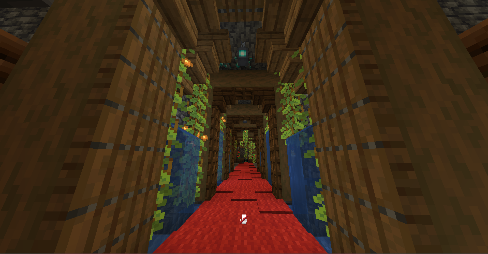
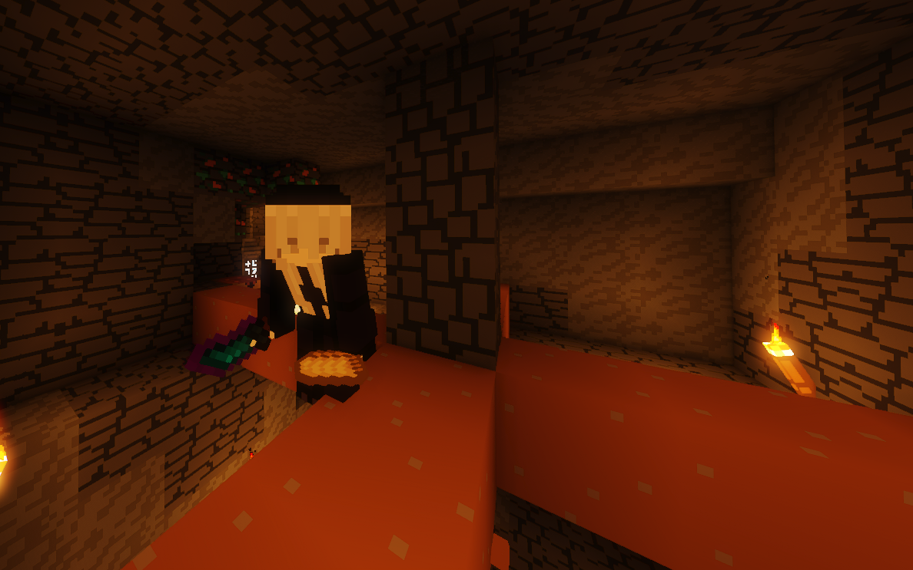

minecraft é como eu tiro o estresse do meu ombro pra dar uma relaxada
Apesar de jogar minecraft des de 2015 eu nao era muito da area de contruçao, porem nesse ano eu mudei isso e acho q estou indo bem
Essa é o começo de um dos comodos da minha casa em um servidor de minecraft que ando jogando atualmente:

Aqui é o comodo finalizado e decorado:
Oque sao farms?
As farms são sistemas que existem dentro do jogo que usamos para adquirir varios itens, cada farm tem seu tempo e determinaçao para ser feita, ja fiz de quase todos os "mobs" do jogo, porem aqui terei apenaso começo de uma
